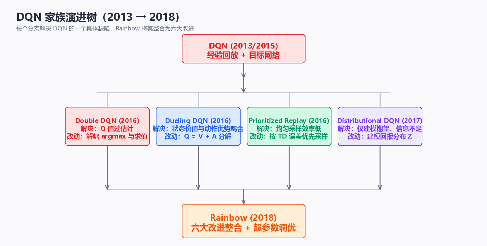

值函数逼近与 DQN 家族（Value Approximation & DQN Family）
第 4 章的 SARSA、Q-Learning、TD(λ) 都是表格型（tabular）算法： 价值函数以查表方式存储，每个状态独立更新，在有限状态空间下有严格的 收敛保证。但表格方法有一个不可回避的天花板——维度灾难（curse of dimensionality）。状态是图像（Atari 像素）、连续向量（机器人关节角） 或高维组合（围棋盘面）时，表格以指数速度爆炸，绝大多数状态甚至永远 不会被访问。出路只有一条：用函数逼近（function approximation） 把"查表"换成"拟合"，用参数化函数 \(V_w(s)\)、\(Q_w(s,a)\) 在有限参数下 表示任意大规模的价值函数，并通过参数共享实现泛化（generalization）。 本章先建立线性值函数逼近的理论地基（特征表示、半梯度 TD、收敛性质）， 再进入深度强化学习的开山之作 DQN（Deep Q-Network）：CNN 网络结构、 经验回放与目标网络两大稳定机制、完整训练流程，随后展开 Double DQN、 Dueling DQN、Prioritized Replay、Rainbow 等整个 DQN 家族，最后讨论 deadly triad（函数逼近 + 自举 + off-policy）带来的收敛性挑战，并以一个 纯 NumPy 实现的 GridWorld DQN 实验收尾。全文假设读者已掌握第 2~4 章 （DP / MC / TD）的内容；所有代码均为可运行的 Python 3 + NumPy 实现， 不依赖任何深度学习框架。
一、从表格到函数逼近
1.1 维度灾难：表格方法的极限
表格型方法把价值函数存为一张表：状态价值是 \(|S|\) 维向量，动作价值是 \(|S| \times |A|\) 矩阵。表的大小随状态空间线性增长，而状态空间本身 通常随维度指数增长：
其中 \(d\) 是状态表示的维度，\(k\) 是每个维度的取值个数。几个具体量级：
| 任务 | 状态表示 | 状态空间量级 | 表格可行性 |
|---|---|---|---|
| 4×4 GridWorld | 2 维离散坐标 | \(16\) | 完全可行 |
| 20×20 迷宫 | 2 维离散坐标 | \(400\) | 可行 |
| 机器人关节控制 | 6 维连续向量 | 无穷（连续） | 不可行 |
| 围棋 | 19×19 棋盘 | \(10^{170}\) 量级 | 不可行 |
| Atari 2600 游戏 | 210×160 像素 × 128 色 | \(128^{33600}\) | 不可行 |
以 Atari 为例：即使把画面降到 84×84 灰度（256 色阶），状态数仍是 \(256^{7056}\)，远超宇宙中原子总数（约 \(10^{80}\)）。表格连"存下所有状态" 都做不到，更谈不上为每个状态维护独立的更新统计量。
除了容量问题，表格方法还有第二个结构性缺陷：访问稀疏性（sparsity）。 智能体在训练中只访问状态空间的一个极小流形，绝大多数状态从未被访问， 它们的表条目永远是初始值。这意味着表格方法无法从已访问状态推广到 未访问状态——每个状态都必须被单独访问足够多次才能学准。
核心思想：维度灾难的本质不是"存储不够"，而是"信息不够"——经验 只能覆盖状态空间的极小部分。函数逼近用参数共享让一次经验同时 更新所有"相似状态"的参数，把"必须访问每个状态"变成"只需访问每个 状态区域"，这是它对抗维度灾难的根本机制。
1.2 为什么需要函数逼近：泛化
函数逼近（function approximation）把价值函数限制在一个参数化函数族 内：
其中 \(w\) 是参数向量（线性系数或神经网络权重），参数数量远小于状态 数量。学习的目标不再是"填表"，而是找一组参数 \(w\) 使近似误差最小。
函数逼近带来的三个核心收益：
- 泛化（generalization）：相似状态共享参数，访问 \(s\) 的经验会 改善所有与 \(s\) 相似状态的估值。这是样本效率提升的根本来源；
- 固定容量：参数数量与状态规模解耦，内存占用不随 \(|S|\) 增长；
- 连续插值：对连续状态空间，函数逼近天然给出连续的价值曲面， 无需离散化。
代价是收敛保证的丧失：表格方法在 on-policy + 适当步长下几乎必然 收敛，而函数逼近（尤其非线性 + 自举 + off-policy 组合）可能震荡甚至 发散。这一矛盾贯穿本章全部内容。
表格方法与函数逼近的全面对比：
| 维度 | 表格方法（查表） | 函数逼近（拟合） |
|---|---|---|
| 参数数量 | $ | S |
| 泛化能力 | 无：未访问状态无信息 | 有：相似状态共享参数 |
| 连续状态 | 需离散化，精度受网格限制 | 天然支持，输出连续曲面 |
| 存储与计算 | 随规模线性增长，可精确存取 | 恒定，但每次更新要前向/反向计算 |
| 收敛保证 | on-policy 下严格收敛 | 视函数族与算法而定，可能发散 |
| 样本效率 | 低：每个状态须被多次访问 | 高：一次经验惠及整个状态区域 |
| 典型算法 | 表格 TD、Q-Learning、TD(λ) | 半梯度 TD、DQN 及家族 |
1.3 参数化价值函数：学习目标
函数逼近的"监督信号"来自哪里？值函数本身没有现成标签，标签来自 RL 自身的三种目标：
| 学习信号 | 目标公式 | 性质 |
|---|---|---|
| MC 目标 | \(w \leftarrow w + \alpha\left[G_t - V_w(S_t)\right]\nabla_w V_w(S_t)\) | 无偏，高方差，回合结束才能用 |
| TD(0) 目标 | \(w \leftarrow w + \alpha\left[R_{t+1} + \gamma V_w(S_{t+1}) - V_w(S_t)\right]\nabla_w V_w(S_t)\) | 有偏，低方差，每步可用 |
| n-step 目标 | \(w \leftarrow w + \alpha\left[G_{t:t+n} - V_w(S_t)\right]\nabla_w V_w(S_t)\) | 偏差-方差可调 |
在预测问题中，衡量参数质量的标准是加权均方误差：
其中 \(\mu(s)\) 是 on-policy 分布（策略 \(\pi\) 下各状态被访问的稳态频率）。 注意 \(\overline{VE}\) 的定义依赖未知的 \(v_\pi\)——函数逼近的优化是一个 "用估计更新估计"的过程，这正是自举（bootstrapping）在参数空间的 延伸，也是后续所有稳定性问题的根源。
1.4 线性 vs 非线性：两种函数族
函数逼近按 \(V_w(s)\) 对 \(w\) 的依赖方式分为两大类：
- 线性逼近（linear approximation）：\(V_w(s) = w^\top x(s)\)，价值是 特征向量 \(x(s)\) 的线性函数；
- 非线性逼近（nonlinear approximation）：典型如多层神经网络， 价值是输入的复合非线性函数。
| 维度 | 线性逼近 | 非线性逼近（神经网络） |
|---|---|---|
| 表示能力 | 限于特征的线性组合，受特征质量制约 | 通用近似定理保证可逼近任意连续函数 |
| 特征工程 | 依赖人工设计特征（瓦片编码、RBF、傅里叶等） | 端到端学习，特征由网络自动提取 |
| 收敛保证 | on-policy 半梯度 TD 可证明收敛到 TD 不动点 | 无一般性保证，需工程手段稳定 |
| 训练稳定性 | 高：目标函数通常是凸的 | 低：非凸优化 + 自举易震荡 |
| 参数数量 | \(d\)（特征维度） | 可达数百万 |
| 梯度计算 | \(\nabla_w V_w(s) = x(s)\)，解析简单 | 反向传播（backpropagation） |
| 典型场景 | 经典 RL 教学、线性控制、大规模推荐 | Atari、围棋、机器人等大规模任务 |
核心思想：线性与非线性不是"谁更好"的关系，而是理论完备性与 表示能力之间的取舍。线性方法有收敛定理背书，但表达力受限于特征； 神经网络表达力强，却把收敛问题从"数学"移交给了"工程"。DQN 的贡献 之一，就是用一套工程机制（回放 + 目标网络）让非线性逼近在实践中 变得可用。
1.5 表格还是函数逼近：工程决策指南
| 场景 | 推荐方案 | 理由 |
|---|---|---|
| 状态可穷举（\(10^6\) 量级内）且被频繁访问 | 表格方法 | 有严格收敛保证，实现简单，无特征工程负担 |
| 状态空间大但低维连续、结构已知 | 线性逼近（瓦片编码 / RBF） | 收敛有界，单次更新开销极小 |
| 状态是高维原始输入（图像、音频） | 非线性深度网络 | 特征自动学习，表示能力强 |
| 实时性要求极高（嵌入式控制） | 线性逼近 | 前向计算只有一次矩阵乘法 |
| 离线训练 + 大规模仿真（游戏、机器人） | 深度网络 + 经验回放 | 样本效率与容量优势明显 |
几点工程经验：
- 表格与函数逼近并非互斥——大规模问题常采用分层策略：函数逼近 提供全局粗估值，表格（或细粒度特征）在关键局部区域精修；
- 选择函数族时先问"状态结构是什么"：离散 ID 用 one-hot/embedding， 连续低维用瓦片编码，原始像素用 CNN，序列用 RNN/Transformer—— 特征化方式必须匹配状态结构，而非一味追求更深的网络；
- 判断"该不该上深度 RL"的实用标准：线性基线（如线性 Q-Learning + 瓦片编码）是否已经够用。大量实际任务中线性基线已接近上限， 此时深度网络带来的只是边际收益和大量调参成本。
二、线性值函数逼近
2.1 特征表示（Feature Representation）
线性逼近的第一步是把状态 \(s\) 映射为特征向量（feature vector） \(x(s) = (x_1(s), x_2(s), \ldots, x_d(s))^\top \in \mathbb{R}^d\)，然后：
特征的选择直接决定表示能力。常用特征构造方法：
| 特征类型 | 定义 | 特点 | 适用场景 |
|---|---|---|---|
| one-hot 编码 | \(x_i(s) = \mathbf{1}\{s = s_i\}\) | 每个状态一个特征，等价于查表；无泛化 | 状态可穷举的小规模问题 |
| 多项式特征 | 状态分量的幂与交叉项 \(s_1^2, s_1 s_2, \ldots\) | 全局光滑，能拟合非线性关系 | 低维连续状态 |
| 傅里叶特征 | \(\cos(\pi c^\top s)\)，\(c\) 为频率向量 | 频率分解，基函数正交性好 | 周期/平滑价值函数 |
| 径向基函数（RBF） | \(\exp\left(-\frac{\|s - c_i\|^2}{2\sigma^2}\right)\) | 局部响应，每个基函数只影响局部区域 | 中低维连续状态 |
| 瓦片编码（Tile Coding） | 多套偏移网格的 one-hot 叠加 | 局部泛化 + 计算高效 + 可增量式 | 经典 RL 连续状态的标准选择 |
瓦片编码值得多说一句：它用 \(k\) 套互相偏移的网格覆盖状态空间，每个状态 同时落在 \(k\) 个"瓦片"上，特征向量为这 \(k\) 个瓦片的 one-hot 叠加。 相邻状态共享大部分瓦片 → 获得局部泛化；瓦片数量决定分辨率与 泛化粒度的权衡。它是深度学习流行之前连续状态 RL 的事实标准。
2.2 半梯度 TD 更新（Semi-gradient TD）
把表格 TD(0) 的更新对象从"表条目"换成"参数 \(w\)"，得到线性半梯度 TD(0)：
线性情况下 \(\nabla_w V_w(S_t) = x(S_t)\)，展开为：
为什么叫"半梯度"（semi-gradient）？ 完整的梯度下降要求对目标 \(\frac{1}{2}\left[v_\pi(S_t) - V_w(S_t)\right]^2\) 求梯度。但 TD 目标 \(R_{t+1} + \gamma V_w(S_{t+1})\) 本身也依赖 \(w\)——严格求导应包含 \(\nabla_w V_w(S_{t+1})\) 项。半梯度把 TD 目标当作常数处理，只对 \(V_w(S_t)\) 求导，丢弃了 \(\gamma \nabla_w V_w(S_{t+1})\) 这一项。
| 更新方式 | 对目标的处理 | 性质 |
|---|---|---|
| 完整梯度（residual gradient） | 对 \(V_w(S_{t+1})\) 也求导 | 收敛到贝尔曼误差最小解，但收敛慢、可能收敛到错误解 |
| 半梯度 | 目标当常数，只对 \(V_w(S_t)\) 求导 | 表格型下退化为标准 TD(0)，收敛快，on-policy 下收敛到 TD 不动点 |
| MC 梯度 | 目标 \(G_t\) 不含 \(w\)，天然是完整梯度 | 无偏，高方差 |
核心思想：半梯度是"丢弃一项梯度"换来的稳定性与速度。它不最小化 任何显式目标函数，却在实际中表现更好——因为完整梯度会同时移动 "目标端"，相当于在两个方向上拉扯参数。半梯度固定目标、只移动 预测端，本质是自举的工程化妥协。
2.3 收敛性质：什么情况下有保证
线性函数逼近 + 半梯度 TD 的收敛理论是经典 RL 最漂亮的结论之一， 同时也是 off-policy 灾难的开始：
| 设置 | 算法 | 收敛性结论 |
|---|---|---|
| 表格型 + on-policy | TD(0)、SARSA | 以概率 1 收敛到真值 \(v_\pi\) |
| 表格型 + off-policy | Q-Learning | 以概率 1 收敛到 \(q_*\)（有限状态、GLIE 探索） |
| 线性 + on-policy | 半梯度 TD(0) | 收敛到 TD 不动点 \(w_\infty\) |
| 线性 + off-policy | 半梯度 TD(0) | 可能发散（Baird 反例，见第 7 章） |
| 非线性 + 任意 | 半梯度 TD | 无一般性保证 |
on-policy 线性半梯度 TD(0) 的收敛结论有精确表述：\(w_t\) 收敛到 TD 不动点 \(w_\infty\)，且其渐近均方误差有上界：
即：线性半梯度 TD 找到的解，其误差不超过最优线性解误差的 \(\frac{1}{1-\gamma}\) 倍。当 \(\gamma\) 接近 1 时这个界变松，但至少保证 不发散。这个"有界但不最优"的结论，与非线性 + off-policy 下的 "可能彻底发散"形成鲜明对比。
2.4 查表法 = one-hot 特例
表格方法其实是线性函数逼近的特例：取特征为 one-hot 编码 \(x(s) = e_s\)（第 \(s\) 位为 1 的单位向量），则：
每个状态恰好对应一个独立参数 \(w_s\)，更新退化为：
这正是表格 TD(0)。因此本章的所有分析都向下兼容第 4 章：表格方法 的一切结论是线性逼近在"每状态一个特征"下的特例。反过来说，任何 线性逼近都可以看作"在特征空间里做表格方法"——特征定义了状态空间的 压缩表示，泛化就发生在压缩丢失信息的那个维度上。
2.5 代码：线性半梯度 TD(0) 预测
用第 4 章的随机游走环境（5 个非终止状态，两端终止）对比三种特征： one-hot（= 表格 TD）、RBF 特征（泛化）。真值 \(v_\pi = [1/6, 2/6, 3/6, 4/6, 5/6]\)。
import numpy as np
class RandomWalk:
"""5 个非终止状态 A-E，左右两端为终止（左端奖励 0，右端奖励 +1）"""
def __init__(self, n=5):
self.n = n
self.s = None
def reset(self):
self.s = self.n // 2 # 从中间状态 C 出发
return self.s
def step(self, a):
ns = self.s + np.random.choice([-1, 1])
if ns < 0:
return 0, 0.0, True # 左端终止：奖励 0
if ns >= self.n:
return 0, 1.0, True # 右端终止：奖励 +1
self.s = ns
return self.s, 0.0, False
def onehot_features(s, n):
"""one-hot 特征：等价于表格方法"""
x = np.zeros(n)
x[s] = 1.0
return x
def rbf_features(s, n, centers=None, sigma=0.5):
"""RBF 特征：以每个状态为高斯中心，产生平滑的局部响应"""
if centers is None:
centers = np.arange(n)
return np.exp(-(s - centers) ** 2 / (2 * sigma ** 2))
def semi_gradient_td(env, feature_fn, episodes=200, alpha=0.1, gamma=1.0):
d = len(feature_fn(0, env.n))
w = np.zeros(d)
for _ in range(episodes):
s = env.reset(); done = False
while not done:
s2, r, done = env.step(0)
x_s = feature_fn(s, env.n)
x_s2 = feature_fn(s2, env.n) if not done else np.zeros(d)
delta = r + gamma * (w @ x_s2) - (w @ x_s)
w += alpha * delta * x_s # 半梯度更新：w ← w + α·δ·x(s)
s = s2
return w
true_v = np.array([1, 2, 3, 4, 5]) / 6.0
np.random.seed(42)
# 1) one-hot 特征：应复现表格 TD(0) 的结果
w1 = semi_gradient_td(RandomWalk(), onehot_features, episodes=100, alpha=0.1)
print("one-hot 特征 V:", [f"{v:.3f}" for v in w1])
print("表格 TD(0) 真值:", [f"{v:.3f}" for v in true_v])
# 2) RBF 特征：参数更少（5 个），靠泛化逼近同一真值
w2 = semi_gradient_td(RandomWalk(), rbf_features, episodes=100, alpha=0.1)
V_rbf = np.array([w2 @ rbf_features(s, 5) for s in range(5)])
print("RBF 特征 V:", [f"{v:.3f}" for v in V_rbf], " (参数 w 只有 5 个)")
# 预期输出（np.random.seed(42) 已固定，可复现）:
# one-hot 特征 V: ['0.128', '0.249', '0.432', '0.682', '0.826']
# 表格 TD(0) 真值: ['0.167', '0.333', '0.500', '0.667', '0.833']
# RBF 特征 V: ['0.152', '0.266', '0.433', '0.633', '0.811'] (参数 w 只有 5 个)
代码要点：
- 半梯度更新
w += alpha * delta * x_s与 2.2 节公式逐项对应， 终止状态的特征向量取零向量（\(V_w(\text{终止}) = 0\)）； - one-hot 特征下每个状态一个独立参数，更新互不干扰，等价于 表格 TD(0)，但 100 回合内只收敛到近似值（与第 4 章结论一致）；
- RBF 特征下 5 个参数同时服务所有状态：访问 \(C\) 的经验通过 高斯核的邻近性同时改善 \(B\)、\(D\) 的估值——这就是泛化，也是 RBF 版本收敛更接近真值的原因（信息在状态间流动）。
注意：线性函数逼近虽然理论优美，但特征工程是硬伤——瓦片编码、 RBF 都需要人工设计且在高维空间失效。深度学习取代线性逼近的根本原因， 不是"非线性更强"，而是特征可以自动从原始输入学出来。这正是 本章第 3 节 DQN 做的事情。
三、DQN 开山之作
3.1 背景：从经典 RL 到深度 RL 的跃迁
2013 年 Mnih 等人发表《Playing Atari with Deep Reinforcement Learning》， 2015 年在 Nature 发表《Human-level control through deep reinforcement learning》。这是深度强化学习（Deep RL）的奠基工作：一个网络结构固定、 不针对任何游戏定制的智能体，仅凭原始像素帧和奖励信号，在 49 个 Atari 2600 游戏中达到超越人类专家的水平（2015 版为 57 个游戏）。
DQN 之前，"Q-Learning + 深度网络"被认为不可行：第 4 章的 Q-Learning 换成非线性函数逼近后，训练几乎必然震荡或发散（deadly triad，见本章 第 7 节）。DQN 的贡献不是新的学习原理，而是两个工程机制让深度 Q-Learning 第一次稳定可用：
- 经验回放（experience replay）：打破样本间的时序相关性；
- 目标网络（target network）：冻结 TD 目标，抑制自举的自我强化。
其余部分（\(\epsilon\)-greedy、Q-Learning 更新、贝尔曼方程）都是第 4 章 的直接继承。理解 DQN 的关键，是分清"哪些是旧思想、哪些是新机制"。
3.2 网络结构：CNN 处理 Atari 像素
DQN 的输入不是单个画面，而是最近 4 帧灰度图的堆叠（84×84×4）—— 单帧无法区分运动方向，帧堆叠把"速度/方向"编码进状态表示。网络主体是 三层卷积（convolutional layer）+ 两层全连接：
输入: 最近 4 帧灰度图堆叠 (84 × 84 × 4)
│
▼
┌────────────────────────────────────────────────────────┐
│ Conv1: 32 个 8×8 卷积核, stride=4, ReLU → 20×20×32 │
│ Conv2: 64 个 4×4 卷积核, stride=2, ReLU → 9×9×64 │
│ Conv3: 64 个 3×3 卷积核, stride=1, ReLU → 7×7×64 │
│ 展平 (flatten) │
│ FC: 512 个神经元, ReLU → 512 │
│ 输出层: |A| 个线性单元（无激活） → Q(s,·) │
└────────────────────────────────────────────────────────┘

输出层的设计有一个关键决策：输出层为每个动作输出一个 Q 值 \(Q_w(s, a)\)，而不是"输入 (s, a) 对、输出单个 Q 值"。原因：
| 设计 | 一次前向 | \(\arg\max_a Q(s,a)\) | 适用 |
|---|---|---|---|
| 输出全部动作的 Q（DQN 方案） | 得到 $ | A | $ 个 Q 值 |
| 输入 (s,a) 输出单个 Q | 只得到 1 个 Q 值 | 需 $ | A |
Atari 每个游戏的动作数通常 4~18 个，输出全部动作的方案让贪心动作选择 从"18 次前向"降到"1 次前向"，且共享特征提取器。
3.3 为什么用 CNN
卷积网络（Convolutional Neural Network）天然适配像素输入：
- 局部感受野：卷积核只看局部邻域，符合图像"邻近像素相关"的先验；
- 参数共享：同一卷积核滑过整幅图像，参数量远小于全连接层 （84×84×4 全连接到 512 单元需要约 1450 万参数，三层卷积仅约 4.4 万参数）；
- 平移等变性：物体在画面中移动，其局部特征响应不变，利于 "乒乓球的球拍位置"这类空间不变特征的提取。
3.4 输入预处理流程
原始 210×160 彩色帧 → 网络输入 84×84×4 灰度帧，中间经过四步：
210×160 RGB ──► 灰度化 ──► 下采样到 84×84 ──► 取两帧逐像素 max（消闪）
──► 最近 4 帧堆叠（84×84×4）──► 网络
| 预处理 | 作用 |
|---|---|
| 灰度化 | 颜色对游戏策略几乎无信息量，降为单通道减少计算 |
| 下采样到 84×84 | 降低分辨率，控制输入规模 |
| 两帧逐像素取 max | Atari 显示有闪烁（隔行渲染），取 max 消除闪烁伪影 |
| 最近 4 帧堆叠 | 编码运动信息（方向、速度） |
| 跳帧（frame skipping） | 每 4 帧选一次动作并重复执行，降低决策频率 |
| 奖励裁剪（reward clipping） | 奖励裁剪到 \([-1, +1]\)：不同游戏奖励量纲差异巨大（乒乓 ±1，拳击 ±100），裁剪统一梯度尺度 |
奖励裁剪是一个容易被低估的关键细节：它把"学习最优策略"与"学习 奖励的量纲"解耦，让同一套超参数（学习率等）跨游戏通用。
3.5 实验结果与历史意义
Nature 2015 论文在 49 个 Atari 游戏中训练 DQN，超参数对所有游戏 完全相同（2015 版扩展到 57 个游戏）。结果要点：
| 结果 | 数据 |
|---|---|
| 人类水平 | 49 个游戏中 29 个超过人类专家（2015 版 57 个中 43 个） |
| 与既有方法对比 | 显著超过此前所有学习方法（含线性逼近变体） |
| 训练成本 | 单个游戏约 3800 万帧，训练数天（当时硬件） |
论文的两组关键消融直接验证了本章第 4 节两个机制的必要性：
| 消融 | 现象 | 结论 |
|---|---|---|
| 去掉经验回放（改在线更新） | 多数游戏分数大幅下降 | 回放是稳定训练的必要组件 |
| 去掉目标网络（目标用在线网络计算） | 部分游戏训练发散 | 目标网络抑制自举失稳 |
| 用线性逼近替代 CNN | 平均分数显著低于 CNN 版本 | 特征自动学习带来实质收益 |
历史意义：DQN 是第一个"输入原始感官信号、输出动作、跨任务通用" 的深度 RL 系统。它的"卷积网络 + 经验回放 + 目标网络"三件套成为 后续所有深度 value-based 方法的标准骨架，并直接启发了 DDPG、TD3、 SAC 等连续控制算法（第 7 章）——后者沿用回放与目标网络，只是把 \(\arg\max\) 换成了策略网络。
四、DQN 两大神器：经验回放与目标网络
4.1 经验回放（Experience Replay）
问题：样本相关性。 在线 TD 学习按时间顺序消费经验，相邻样本 \((s_t, a_t, r_t, s_{t+1})\) 与 \((s_{t+1}, a_{t+1}, r_{t+1}, s_{t+2})\) 高度相关（自相关）。用强相关的 mini-batch 做梯度下降，更新方向彼此 抵消，等效于在高方差噪声中优化，训练震荡。
问题：样本效率。 在线学习每条经验只用一次即丢弃。而一条 "到达宝藏"的稀有经验可能价值极高，值得反复学习。
问题：非平稳数据分布。 策略在变、价值估计在变，在线数据的分布 也在变，违背了监督学习对数据 i.i.d. 的假设。
方案： 维护一个经验池（replay buffer）\(\mathcal{D}\)，把每条经验 \((s, a, r, s', \text{done})\) 存入；训练时从池中均匀随机采样 mini-batch。这同时解决三个问题：随机采样打断时序相关性（近似 i.i.d.）、 每条经验可被多次使用（样本效率）、训练分布相对稳定（平稳性）。
import numpy as np
from collections import deque
class ReplayBuffer:
"""经验回放缓冲：环形队列（cap 条），均匀随机采样 mini-batch"""
def __init__(self, capacity):
self.buf = deque(maxlen=capacity) # 超容量自动丢弃最旧经验
def push(self, s, a, r, s2, done):
"""存入一条经验 (状态, 动作, 奖励, 下一状态, 是否终止)"""
self.buf.append((s, a, r, s2, done))
def sample(self, batch_size):
"""均匀随机采样 batch_size 条经验，按字段拆成数组返回"""
idx = np.random.choice(len(self.buf), batch_size, replace=False)
batch = [self.buf[i] for i in idx]
s = np.array([e[0] for e in batch], dtype=float)
a = np.array([e[1] for e in batch], dtype=int)
r = np.array([e[2] for e in batch], dtype=float)
s2 = np.array([e[3] for e in batch], dtype=float)
done = np.array([e[4] for e in batch], dtype=bool)
return s, a, r, s2, done
def __len__(self):
return len(self.buf)
# 预期输出: 无（类定义）；第 8 章实验将直接使用本类
注意：均匀采样是uniform replay，即"不加选择地随机回放"。它的局限 是忽略了经验之间的信息量差异——这正是本章第 6 节 Prioritized Replay 的改进动机。
核心思想：经验回放把"强化学习问题"改造成"监督学习问题"——数据 从"策略实时产生的时序流"变成"从固定池中的均匀抽样"。这一改造牺牲了 在线性（off-policy 训练成为必需），换来了深度学习的稳定性前提。
4.2 目标网络（Target Network）
问题：追着移动的靶子。 DQN 的 TD 目标是：
目标 \(y_t\) 依赖当前参数 \(w\)。每步更新 \(w\)，所有目标 \(y_t\) 也随之 移动——优化目标本身非平稳。梯度下降在"自己移动的靶子"上优化， 容易震荡甚至发散。
方案： 维护两份参数：在线网络 \(Q_w\)（负责选动作、被训练）与 目标网络 \(Q_{w^-}\)（负责计算 TD 目标）。目标网络不参与训练，只是 每 \(C\) 步（如 10000 步）把在线网络的参数硬复制过去：
梯度只流向 \(Q_w(s, a)\) 一侧，\(Q_{w^-}\) 在两次复制之间保持冻结。这使 TD 目标在 \(C\) 步内近似恒定，训练变成"对固定目标做监督学习"， 大幅降低自举的自我强化效应。
| 机制 | 解决的相关性 | 机制细节 |
|---|---|---|
| 经验回放 | 样本间时序相关性 | 均匀采样打乱顺序，近似 i.i.d. |
| 目标网络 | 目标与预测的耦合 | 冻结目标网络 \(Q_{w^-}\)，每 \(C\) 步复制参数 |
4.3 硬更新 vs 软更新
DQN 原版采用硬更新（hard update）：每 \(C\) 步整体复制 \(w^- \leftarrow w\)。后续算法（DDPG、TD3、SAC）常用软更新（soft update / Polyak averaging）：每步做指数滑动平均 \(w^- \leftarrow \tau w + (1-\tau) w^-\)。
| 维度 | 硬更新（DQN 原版） | 软更新（Polyak 平均） |
|---|---|---|
| 更新公式 | \(w^- \leftarrow w\)（每 \(C\) 步） | \(w^- \leftarrow \tau w + (1-\tau) w^-\)（每步） |
| 目标变化方式 | 阶梯式突变，周期内恒定 | 平滑渐进，每步微小移动 |
| 关键超参数 | 复制周期 \(C\)（Nature 取 10000） | 插值系数 \(\tau\)（常取 0.005） |
| 目标滞后程度 | 滞后 \(C\) 步（目标陈旧但稳定） | 滞后约 \(1/\tau\) 步（目标新鲜但总在动） |
| 训练稳定性 | 周期内目标恒定，稳定 | 目标缓慢漂移，需更小学习率配合 |
| 收敛速度 | 目标陈旧可能拖慢学习 | 目标跟踪更紧，通常收敛更快 |
| 典型使用者 | DQN 及家族（Double/Dueling/Rainbow） | DDPG、TD3、SAC 等连续控制算法 |
核心思想：硬更新与软更新是"目标稳定性"与"目标新鲜度"之间的 同一个旋钮。目标越陈旧越稳定（但学得慢），越新鲜越跟手（但易震荡）。 \(C\) 与 \(\tau\) 分别控制这两种更新在时间轴上的滞后尺度。
五、DQN 训练流程
5.1 完整循环
DQN 的完整数据流把环境交互、经验存储、离线训练、目标同步组织成 一个闭环：
┌────────────────────────────────────┐
│ 环境（Atari 模拟器） │
└───────▲───────────────────┬────────┘
│ 状态 s_t │ 动作 a_t
│ (84×84×4 帧堆叠) │ (ε-greedy 采样)
▼ │
┌──────────────────────────┐ │
│ 经验回放缓冲 D │◄───────────┤
│ (s, a, r, s', done) │ push 每条经验
└───────────▲──────────────┘ │
│ │
│ 每 4 步: 均匀采样 batch │
│ ▼
┌───────────┴──────────────┐ ┌────────────────────────┐
│ 在线网络 Q_w │ │ 目标网络 Q_{w^-} │
│ ① 前向: Q_w(s,a) │ │ ② 前向: max_{a'} │
│ ③ 对 (y - Q_w)² 求梯度 │ │ Q_{w^-}(s',a') │
│ ④ SGD/Adam 更新 w │ │ │
└───────────┬──────────────┘ └───────────▲────────────┘
│ │
└── 每 C 步: w^- ← w (硬复制) ──┘
四个环节的分工：环境产生经验 → 回放池存储并打乱经验 → 在线网络是唯一被训练的对象 → 目标网络提供稳定的 TD 目标并 周期性同步。
5.2 损失函数与梯度
DQN 在 mini-batch 上最小化时序差分均方误差（TD MSE）：
对 \(w\) 求梯度（目标 \(y\) 视为常数，不反向传播——这是 2.2 节半梯度 思想在深度网络中的直接延续）：
两个实现细节：
- 只更新选中动作的输出：梯度 \(\nabla_w Q_w(s,a)\) 只针对 batch 中 实际执行的动作 \(a\)；其他动作的输出单元不产生梯度（\(\arg\max\) 操作不可微，且无需微）；
- 终止状态处理：若 \(s'\) 是终止状态，目标退化为 \(y = r\)
（\(V(\text{终止}) = 0\)），对应伪代码中的
if done: y = r分支。
实际实现常把 MSE 换成 Huber loss（\(\delta=1\) 时对残差分段线性）， 对离群 TD 误差更鲁棒：
5.3 伪代码（Nature DQN）
算法: Deep Q-Network（Nature 2015 版）
──────────────────────────────────────────────────────────────
输入: 学习率 α，折扣 γ，回放容量 N，目标更新周期 C，batch 大小 B
1. 初始化在线网络参数 w，目标网络参数 w⁻ ← w
2. 初始化回放缓冲 D（容量 N），ε = 1.0
3. for episode = 1, 2, ... do
4. 重置环境，预处理得到初始帧堆叠 s
5. for t = 1, 2, ... do
6. 以概率 ε 随机选动作 a；否则 a = argmax_a Q_w(s, a)
7. 执行 a，观测奖励 r 与下一帧；预处理得到 s'
8. r ← clip(r, -1, 1) # 奖励裁剪
9. D.push(s, a, r, s', done) # 存入回放池
10. s ← s'
11. if t 是 4 的倍数 且 |D| ≥ B: # 每 4 步训练一次
12. 从 D 均匀采样 mini-batch (s_j, a_j, r_j, s'_j, done_j)
13. y_j = r_j # 若 done_j 为真
14. 否则 y_j = r_j + γ · max_{a'} Q_{w⁻}(s'_j, a')
15. 对损失 (1/B)·Σ_j (y_j - Q_w(s_j, a_j))² 做一步梯度下降
16. if t 是 C 的倍数: w⁻ ← w # 硬更新目标网络
17. if done: break
18. ε ← max(0.1, ε - 退火步长) # ε 线性退火到 0.1
5.4 超参数与训练细节
Nature DQN 的超参数设置（这套参数跨 49 个游戏通用，是"通用性"的 重要体现）：
| 超参数 | 取值 | 说明 |
|---|---|---|
| 回放容量 \(N\) | 1,000,000 | 环形缓冲，满后覆盖最旧经验 |
| 探索 ε | 1.0 → 0.1 线性退火 | 前 1,000,000 帧完成退火 |
| 训练频率 | 每 4 步 | 与跳帧配合，降低计算量 |
| mini-batch 大小 \(B\) | 32 | |
| 优化器与学习率 | RMSProp, 0.00025（2015）；Adam, 0.00025（2013） | 梯度裁剪到 \([-1,1]\) |
| 折扣因子 \(\gamma\) | 0.99 | |
| 目标网络更新周期 \(C\) | 10,000 步 | 硬复制 |
| 奖励裁剪 | \(\text{clip}(r, -1, 1)\) | 统一量纲 |
| 跳帧 | 4 帧 | 每 4 帧选一次动作 |
| 热身（warm-up） | 前 50,000 步只采样不训练 | 先填满回放池 |
核心思想：DQN 的训练循环是"第 4 章 Q-Learning 骨架 + 回放池 + 目标网络"的组合。理解它的最好方式不是背伪代码，而是追踪一条经验 的完整生命周期：产生（环境）→ 存储（回放池）→ 采样（均匀随机） → 打目标（目标网络）→ 学梯度（在线网络）→ 同步（硬复制）。
六、DQN 家族演进
DQN 之后三年内出现了一系列针对性改进，每个改进解决一个具体缺陷， 最终在 Rainbow（2018）中集成。理解这个家族的正确姿势是：先明确 每个算法解决什么问题，再看它改动了训练循环的哪个环节。
6.1 Double DQN：对抗过估计
问题：过估计（overestimation）。 第 4 章 5.2 节已经讲过最大化偏差： \(\mathbb{E}[\max X] \ge \max \mathbb{E}[X]\)。Q-Learning 的 \(\max_{a'} Q(s', a')\) 在估计噪声存在时系统性高估价值。深度版本 更严重：函数逼近误差 + 自举让过估计在训练中自我放大——高估的 动作被更频繁地选择，其高估又被进一步学习，形成恶性循环，最终导致 策略退化（选择实际劣质的动作）。
方案：解耦"选择"与"评估"。 第 4 章的 Double Q-Learning 用两套 独立 Q 表；Double DQN（van Hasselt et al., 2016）发现 DQN 已有的 两个网络（在线 + 目标）恰好可以承担这个角色，无需额外参数：
| 算法 | TD 目标 \(y\) | 谁选动作 | 谁评估 |
|---|---|---|---|
| DQN | \(r + \gamma \max_{a'} Q_{w^-}(s', a')\) | 目标网络（max 内含选择） | 目标网络 |
| Double DQN | \(r + \gamma Q_{w^-}\!\left(s', \arg\max_{a'} Q_w(s', a')\right)\) | 在线网络 \(Q_w\) | 目标网络 \(Q_{w^-}\) |
展开对比：
在线网络 \(Q_w\) 选择"它认为最优"的动作，目标网络 \(Q_{w^-}\) 对该动作 给出独立的估值。两个网络的估计误差近似独立，过估计的正偏差被 期望上抵消。实现改动极小（一行公式），在 Atari 上估值更准、分数 普遍提升，且对 DQN 是免费午餐——不增加任何计算或超参数。
核心思想：过估计的根源是"用同一个估计器既选择又评估"。Double DQN 的洞察是 DQN 本来就有两个网络，让它们分工即可——这也是 "最大化偏差"理论（第 4 章）在深度 RL 中的直接应用。
6.2 Dueling DQN：优势分解
问题：价值被"动作无关"的部分主导。 在很多状态下，动作选择对 回报几乎没有影响（例如 Atari 游戏里屏幕上没有敌人时，左右移动都 一样）。此时 \(Q(s,a)\) 中"状态价值" \(V(s)\) 占主导，而"动作优势" \(A(s,a) = Q(s,a) - V(s)\) 很小。标准 DQN 为每个动作分别估计 Q 值， 把大量容量浪费在重复学习 \(V(s)\) 上。
方案：双头分解。 Dueling DQN（Wang et al., 2016）把网络输出层 拆成两个头：状态价值头 \(V(s)\) 与优势头 \(A(s,a)\)，再合成 Q 值：
直接相加存在可辨识性问题：\(V\) 与 \(A\) 的分解不唯一（给 \(V\) 加 常数、给 \(A\) 减同一常数，Q 不变）。强制优势头对动作取零均值：
实际实现常用均值形式（训练更稳）：
| 维度 | 标准 DQN | Dueling DQN |
|---|---|---|
| 输出头 | 单一 Q 头，$ | A |
| 学习内容 | 每个动作独立学 Q | \(V\) 头学状态价值，\(A\) 头学相对优势 |
| 动作无关状态 | 各动作重复学习相同 \(V\) | \(V\) 头一次性捕获，容量高效 |
| 理论保证 | — | 与 DQN 同框架，无额外假设 |
| 效果 | 基线 | 动作冗余场景（如 Enduro）显著提升 |
6.3 Prioritized Experience Replay：按重要性采样
问题：均匀采样浪费算力。 回放池里不同经验的"学习价值"差异巨大： TD 误差 \(|\delta|\) 大的经验（如"意外发现宝藏"）离当前估计最远， 信息量最大；误差接近零的经验（已被学透）几乎不提供新信息。均匀采样 对两者一视同仁，导致高频重放"已学透"的经验。
方案：按 TD 误差优先采样。 Prioritized Replay（Schaul et al., 2016）给每条经验 \(i\) 分配采样概率：
其中 \(\alpha \in [0, 1]\) 控制优先程度（\(\alpha = 0\) 退化为均匀采样）， \(\epsilon\) 是防止零概率的小常数。为稳定性常用排名版： \(p_i = 1/\text{rank}(i)\)（按 \(|\delta_i|\) 降序排名），对离群误差更鲁棒。
偏差修正：重要性采样权重。 优先采样改变了数据分布（不再是均匀）， 引入估计偏差。用重要性采样（importance sampling, IS）权重修正：
\(\beta\) 从 0.4 线性退火到 1.0——训练初期允许一定偏差（加速学习）， 后期 \(\beta \to 1\) 完全修正（保证收敛）。权重在梯度更新时乘到损失上， 且归一化（除以 \(\max_i w_i\)）保持梯度尺度稳定。
| 环节 | 均匀回放（DQN） | 优先回放（PER） |
|---|---|---|
| 采样分布 | 均匀 | $P(i) \propto |
| 新经验入池 | 无特殊处理 | $ |
| 误差更新 | 无 | 每次训练后更新对应经验的 \(p_i\)（或排名） |
| 分布偏差 | 无 | 用 IS 权重 \(w_i\) 修正 |
| 额外超参数 | 无 | \(\alpha\)、\(\beta\)、\(\epsilon\) |
| 效果 | 基线 | 样本效率与最终分数显著提升 |
6.4 其他三个组件
Multi-step Learning（n 步目标）。 把单步 TD 目标换成 n 步回报 （第 4 章 6.2 节）：
n 步目标让奖励信号沿轨迹传播得更快，加速信用分配；代价是偏差上升、 且 off-policy 下目标不再严格正确（行为策略与目标策略在 n 步内可能 不一致）。\(n = 3\) 左右是 Atari 上的经验最优。
Distributional RL（分布 RL）。 标准 DQN 只预测回报的期望 \(Q(s,a)\)，把分布的丰富信息压缩成一个标量。Distributional DQN （C51，Bellemare et al., 2017）改为预测回报的完整分布：把价值 轴离散成 51 个桶，网络输出每个桶上的概率，用分布间距离（如 KL 散度）做损失。随机转移下分布比期望稳定得多，且期望可从分布恢复 （\(\mathbb{E}[Z] = \sum_i z_i p_i\)）。为什么有效：期望运算会 "破坏"非对称分布的信息，而分布学习保留了不确定性结构，实际表现 更强、更稳。
Noisy Nets（噪声网络）。 \(\epsilon\)-greedy 的探索是"盲目随机"， 且 \(\epsilon\) 退火是手动设定的。Noisy Nets（Fortunato et al., 2018） 把探索参数化：网络权重叠加可学习的高斯噪声 \(w = \mu + \sigma \odot \epsilon\)，噪声幅度 \(\sigma\) 由梯度学习。 网络会自动学会"什么时候该探索、探索多大"——训练初期噪声大（探索）， 后期噪声被压小（利用），探索随训练自适应衰减，无需 \(\epsilon\) 调度。
6.5 Rainbow：七组件集成
Rainbow（Hessel et al., 2018）把上述六个组件与 DQN 本身集成： DDQN + Dueling + Prioritized Replay + Multi-step + Distributional (Distributional DQN) + Noisy Nets，共六个改进 + 基线 DQN。论文做了 系统的消融实验（ablation study）：逐一移除组件，确认每个组件 独立有效、且组件间有正交互作用（移除任一组件都会掉分，但不同组件 的贡献因游戏而异）。
| 组件 | 解决的问题 | 在 Rainbow 中的角色 |
|---|---|---|
| Double DQN | 过估计 | 解耦动作选择与评估 |
| Dueling | 动作无关状态下的容量浪费 | \(V\) / \(A\) 双头分解 |
| Prioritized Replay | 均匀采样低效 | 按 $ |
| Multi-step | 单步信用分配慢 | \(n\) 步回报加速传播 |
| Distributional | 只学期望丢失分布信息 | 51 桶分布输出 + KL 损失 |
| Noisy Nets | \(\epsilon\)-greedy 探索不自适应 | 参数化噪声探索 |
Rainbow 在 Atari 57 个游戏上的平均分与样本效率远超单一组件，是 2018 年 value-based 方法的 SOTA，也是 DQN 家族演进的终点站 （之后 value-based 研究转向分布式与离线 RL）。

6.6 DQN 家族演进总览表
| 算法（年份） | 解决的问题 | 核心改动 | 效果 |
|---|---|---|---|
| DQN（2013/2015） | 深度网络 + Q-Learning 不稳定 | 经验回放 + 目标网络 + CNN | 首个 Atari 人类水平智能体 |
| Double DQN（2016） | max 导致系统性过估计 | 在线网络选动作、目标网络估值 | 估值更准，分数普遍提升，零额外成本 |
| Dueling DQN（2016） | 动作无关状态浪费容量 | \(Q = V + A\) 双头分解 | 动作冗余游戏显著提升 |
| Prioritized Replay（2016） | 均匀采样忽略信息量差异 | 按 $ | \delta |
| Multi-step（2017 用于 DQN） | 单步目标信用传播慢 | \(n\) 步回报目标 | 加速学习，\(n=3\) 最优 |
| Distributional DQN（2017） | 期望压缩丢失分布信息 | 输出回报分布（51 桶）+ KL 损失 | 更稳更强 |
| Noisy Nets（2018） | \(\epsilon\)-greedy 探索不自适应 | 权重加可学习噪声 | 探索自适应，无需 \(\epsilon\) 调度 |
| Rainbow（2018） | 单一改进各有短板 | 六组件集成 + 消融验证 | 当时 value-based SOTA |
核心思想：DQN 家族演进的每一步都是"定位一个具体缺陷 → 在训练 循环的某个环节做最小改动"：Double 改目标公式、Dueling 改网络结构、 PER 改采样器、Multi-step 改目标跨度、Distributional 改输出层、 Noisy 改探索机制。它们互不冲突、可以叠加——这正是 Rainbow 能集成的 原因，也是理解整个家族的纲。
七、收敛性与挑战：deadly triad
7.1 致命三要素（Deadly Triad）
Sutton & Barto 指出：当以下三个条件同时满足时，强化学习可能发散：
- 函数逼近（function approximation）：价值用参数化函数表示， 而非查表；
- 自举（bootstrapping）：更新目标包含自身的估计 （\(r + \gamma \hat{V}(s')\) 依赖 \(\hat{V}\)）；
- off-policy 训练：行为策略（采样数据的策略）与目标策略 （评估/优化的策略）不一致。
三要素的缺失与收敛性的关系：
| 组合 | 缺失要素 | 收敛性 | 代表方法 |
|---|---|---|---|
| 表格 + 自举 + on-policy | 函数逼近 | 以概率 1 收敛 | 表格 TD(0)、SARSA |
| 表格 + 自举 + off-policy | 函数逼近 | 收敛（有限状态 + GLIE） | Q-Learning、Double Q-Learning |
| 线性 + 自举 + on-policy | off-policy | 收敛到 TD 不动点（有界误差） | 半梯度 TD(0)（本章第 2 节） |
| 线性 + 自举 + off-policy | 无 | 可能发散（Baird 反例） | 线性 off-policy 半梯度 TD |
| 非线性 + 自举 + off-policy | 无 | 可能发散，无理论保证 | 原始 DQN（未加回放/目标网络时） |
核心思想：第 2~4 章的所有收敛定理都建立在"至少缺一个要素"之上。 深度 RL（DQN 及其家族）是三项全占的配置——因此没有任何收敛 定理背书，稳定训练完全依赖工程手段。这就是"为什么 DQN 需要那么多 技巧"的根本答案。
7.2 失败模式：Baird 反例与误差自我强化
Baird 反例（Baird's counterexample）是线性 off-policy 半梯度 TD 发散的经典构造：一个 7 状态、2 动作的 MDP，目标策略把 6 个状态 （\(s_2 \sim s_7\)）映射到同一动作，行为策略则偶尔选另一个动作。在 该设置下，线性半梯度 TD(0) 的参数 \(w\) 指数级发散——即使步长 \(\alpha\) 任意小。这个反例证明了：off-policy + 自举 + 函数逼近的组合 下，"半梯度"更新不是任何目标函数的梯度下降，可能沿错误方向 持续放大误差。
失败模式的共性机制可以归纳为误差自我强化循环：
估计误差放大价值偏差
▲ │
│ ▼
行为策略选择被高估的动作 ──► 该动作被更频繁采样 ──► 高估被进一步学习
off-policy 让"被高估的动作"获得更多数据（分布偏移），自举让高估 通过 TD 目标传播到所有前驱状态，函数逼近让误差在参数空间叠加—— 三者在循环中互相放大，最终数值溢出。
7.3 缓解手段表
| 手段 | 缓解的环节 | 作用机制 | 代表算法 |
|---|---|---|---|
| 经验回放 | 分布偏移 | 打乱时序相关性，稳定数据分布 | DQN |
| 目标网络 | 自举目标移动 | 冻结 TD 目标，切断误差即时反馈 | DQN、DDPG |
| 梯度裁剪 / Huber loss | 更新幅度失控 | 限制单步更新的梯度范数 | DQN 实现细节 |
| 双估计（Double） | 最大化偏差 | 解耦选择与评估，消除正偏差 | Double DQN、TD3 |
| 缩小 \(\gamma\) | 误差传播距离 | 减少远期误差的累积放大 | 调参手段 |
| 权重衰减 / 正则化 | 参数空间失稳 | 约束参数范数，抑制爆炸 | 各类深度 RL |
| 重要性采样加权 | 分布偏移 | 修正非均匀采样的偏差 | PER、离线 RL |
| 缩小更新频率 | 目标-预测耦合 | 降低更新对数据分布的冲击 | 每 4 步训练、软更新 |
7.4 实践观察：为什么 DQN 在实践中稳定
严格说，"DQN 为什么在 Atari 上不发散"至今没有统一理论解释，但实践 共识指向几个因素：
- 回放池使数据分布缓慢变化：均匀采样让 mini-batch 近似来自 "历史混合分布"，在线网络参数突变不会立刻反馈到采样分布；
- 目标网络引入滞后：TD 目标滞后 \(C\) 步，误差的自我强化被 时间延迟切断；
- 奖励裁剪限制误差量级：\(|\delta|\) 被限制在 \(O(1)\) 量级， 梯度爆炸被结构性抑制；
- CNN 特征的平滑性：卷积特征的局部性使相近状态输出相近 Q 值， 函数逼近的"尖峰"难以形成。
这些机制都不是收敛定理，而是经验性的稳定性工程。理解 deadly triad 的意义在于：当你设计新算法或调试训练发散时，第一反应应是 "我是否同时满足了三个要素？我打破了哪一个？"——而不是盲目调学习率。
八、综合实验：纯 NumPy DQN 玩转 GridWorld
8.1 实验设计
真实 Atari 环境需要模拟器与深度学习框架，无法在纯 NumPy 下复现。 本实验用玩具环境 + 纯 NumPy 手写网络复现 DQN 的全部核心机制， 保证每个组件都能被直接观察和修改：
| 组件 | 对应 DQN 原版 | 本实验实现 |
|---|---|---|
| 状态表示 | 84×84×4 像素帧（CNN 特征） | 6×6 网格的 one-hot 向量（36 维） |
| Q 网络 | 三层 CNN + 两层 FC | 两层全连接（36 → 32 → 4），手写反向传播 |
| 经验回放 | 容量 10⁶ 的环形缓冲 | 容量 20000 的环形缓冲（第 4 章 4.1 节的类） |
| 目标网络 | 每 10000 步硬复制 | 每 200 步硬复制 |
| 探索 | ε 从 1.0 线性退火到 0.1 | ε 从 1.0 指数退火到 0.05 |
| 训练频率 | 每 4 帧一次 | 每 4 步一次 |
| 优化器 | RMSProp/Adam | SGD（学习率 0.01） |
环境定义： 6×6 网格世界，起点 \((0,0)\)、终点 \((5,5)\)。动作空间 \(\mathcal{A} = \{\)上, 下, 左, 右\(\}\)，共 4 个动作。
| 事件 | 奖励 | 说明 |
|---|---|---|
| 到达终点 \((5,5)\) | \(+10\) | 回合结束 |
| 试图越界（撞墙） | \(-0.5\) | 位置不变 |
| 普通一步 | \(-0.1\) | 鼓励最短路径 |
理论最优：从 \((0,0)\) 到 \((5,5)\) 的最短路径 10 步（5 下 + 5 右）， 总回报 \(10 - 0.1 \times 9 = 9.1\)。学习的目标是让平均回报逼近 9.1。
8.2 Q 网络：NumPy 手写两层 MLP
本实验的 Q 网络是第 3 节图 5-1 网络结构的全连接简化版——CNN 换成两层全连接，输入从像素帧换成 one-hot 状态向量，其余机制 （前向、反向、双网络、回放）完全一致：
网络结构：输入 36（one-hot 状态）→ 隐层 32（ReLU）→ 输出 4（Q 值）。
手写反向传播只有三个关键公式（对 batch 中的每条样本）：
其中 \(g\) 是输出层梯度：只对选中动作 \((s, a)\) 有值，其余动作置零 （对应 5.2 节的"只更新选中动作的输出"）。
8.3 超参数表
| 超参数 | 取值 | 说明 |
|---|---|---|
| 网格大小 | 6×6（36 状态） | 可改 8×8 观察维度灾难 |
| 隐层宽度 | 32 | ReLU |
| 回放容量 | 20000 | 环形缓冲 |
| mini-batch | 32 | 均匀采样 |
| 学习率 | 0.01 | SGD |
| 折扣 \(\gamma\) | 0.99 | |
| ε 退火 | \(1.0 \to 0.05\)，每回合 ×0.995 | 指数退火 |
| 目标网络更新 | 每 200 步硬复制 | 对应原版 10000 步 |
| 训练频率 | 每 4 步 | 对应原版"每 4 帧" |
| 回合最大步数 | 100 | 防止死循环 |
8.4 完整可运行代码
import numpy as np
from collections import deque
# ---------- 1. GridWorld 环境 ----------
class GridWorld:
"""6×6 网格世界：起点 (0,0)，终点 (5,5)。动作: 0=上 1=下 2=左 3=右"""
def __init__(self, size=6):
self.size = size
self.start = (0, 0)
self.goal = (size - 1, size - 1)
self.s = None
def reset(self):
self.s = self.start
return self._sid()
def _sid(self):
"""状态 (x, y) → 状态编号 x*size + y"""
x, y = self.s
return x * self.size + y
def step(self, a):
x, y = self.s
nx, ny = x, y
if a == 0: nx = max(0, x - 1) # 上
elif a == 1: nx = min(self.size - 1, x + 1) # 下
elif a == 2: ny = max(0, y - 1) # 左
else: ny = min(self.size - 1, y + 1) # 右
hit_wall = (nx, ny) == (x, y) # 试图越界
self.s = (nx, ny)
done = (nx, ny) == self.goal
r = 10.0 if done else (-0.5 if hit_wall else -0.1)
return self._sid(), r, done
# ---------- 2. 经验回放（第 4 章 4.1 节的类） ----------
class ReplayBuffer:
"""环形经验池：均匀随机采样"""
def __init__(self, capacity):
self.buf = deque(maxlen=capacity)
def push(self, s, a, r, s2, done):
self.buf.append((s, a, r, s2, done))
def sample(self, batch_size):
idx = np.random.choice(len(self.buf), batch_size, replace=False)
batch = [self.buf[i] for i in idx]
s = np.array([e[0] for e in batch], dtype=float)
a = np.array([e[1] for e in batch], dtype=int)
r = np.array([e[2] for e in batch], dtype=float)
s2 = np.array([e[3] for e in batch], dtype=float)
done = np.array([e[4] for e in batch], dtype=bool)
return s, a, r, s2, done
def __len__(self):
return len(self.buf)
# ---------- 3. Q 网络：NumPy 手写两层 MLP ----------
class QNet:
"""两层全连接网络（ReLU 隐层 + 线性输出），手写前向/反向传播。
对应 8.2 节图 5-1 的 DQN 网络：CNN 换成全连接，输入为 one-hot 状态。"""
def __init__(self, d_in, h, d_out, seed=0):
rng = np.random.default_rng(seed)
# He 初始化：ReLU 网络的标准初始化
self.W1 = rng.standard_normal((d_in, h)) * np.sqrt(2.0 / d_in)
self.b1 = np.zeros(h)
self.W2 = rng.standard_normal((h, d_out)) * np.sqrt(2.0 / h)
self.b2 = np.zeros(d_out)
def forward(self, x):
"""x: (batch, d_in) → Q 值 (batch, d_out)，返回 (q, 缓存)"""
h = np.maximum(0.0, x @ self.W1 + self.b1) # ReLU 激活
q = h @ self.W2 + self.b2
return q, (x, h)
def backward(self, cache, grad_q, lr):
"""对输出梯度 grad_q 做一步 SGD 更新（反向传播）"""
x, h = cache
gW2 = h.T @ grad_q
gb2 = grad_q.sum(axis=0)
gh = grad_q @ self.W2.T
gh[h <= 0] = 0.0 # ReLU 导数：负区间置零
gW1 = x.T @ gh
gb1 = gh.sum(axis=0)
self.W2 -= lr * gW2
self.b2 -= lr * gb2
self.W1 -= lr * gW1
self.b1 -= lr * gb1
# ---------- 4. 工具函数 ----------
def onehot(s_id, n):
"""状态编号 → one-hot 向量（s_id 可能是 float，转 int 索引）"""
v = np.zeros(n)
v[int(s_id)] = 1.0
return v
# ---------- 5. DQN 训练主循环 ----------
def train_dqn(episodes=2000, seed=42):
rng = np.random.default_rng(seed)
np.random.seed(seed) # 同时固定 np.random.choice（采样）
env = GridWorld(6)
nS, nA = 36, 4
online = QNet(nS, 32, nA, seed=seed) # 在线网络（被训练）
target = QNet(nS, 32, nA, seed=seed) # 目标网络（同种子 ⇒ 初始 w⁻ = w）
buf = ReplayBuffer(20000)
gamma, lr = 0.99, 0.01
eps = 1.0
batch_size, train_every = 32, 4
update_target_every, max_steps = 200, 100
steps = 0
returns = []
for ep in range(episodes):
s = env.reset()
G, done, t = 0.0, False, 0
while not done and t < max_steps:
# ε-greedy 动作选择
if rng.random() < eps:
a = int(rng.integers(nA)) # 探索：随机动作
else:
q, _ = online.forward(onehot(s, nS).reshape(1, -1))
a = int(np.argmax(q[0])) # 利用：贪心动作
s2, r, done = env.step(a)
buf.push(s, a, r, s2, done) # 经验入池
G += r
s = s2
t += 1
steps += 1
# 每 train_every 步训练一次（对应 5.4 节"每 4 步训练"）
if steps % train_every == 0 and len(buf) >= batch_size:
sb, ab, rb, s2b, db = buf.sample(batch_size)
# 状态编号 → one-hot 向量（batch 化）
sb = np.array([onehot(sid, nS) for sid in sb])
s2b = np.array([onehot(sid, nS) for sid in s2b])
q_all, cache = online.forward(sb) # 在线网络前向
q_next, _ = target.forward(s2b) # 目标网络前向
y = rb + gamma * q_next.max(axis=1) * (1.0 - db) # TD 目标
# 半梯度：目标 y 不反向传播；只对选中动作 (s,a) 回传梯度
grad = np.zeros_like(q_all)
grad[np.arange(batch_size), ab] = \
2.0 * (q_all[np.arange(batch_size), ab] - y) / batch_size
online.backward(cache, grad, lr) # SGD 一步
# 硬更新目标网络：w⁻ ← w（每 update_target_every 步）
if steps % update_target_every == 0:
target.W1 = online.W1.copy()
target.b1 = online.b1.copy()
target.W2 = online.W2.copy()
target.b2 = online.b2.copy()
eps = max(0.05, eps * 0.995) # ε 指数退火
returns.append(G)
if (ep + 1) % 200 == 0:
avg = np.mean(returns[-100:])
print(f"episode {ep+1:5d} eps={eps:.3f} 最近100回合平均回报={avg:+6.2f}")
# 训练后打印起点 Q 值：最优策略应偏爱"下"与"右"
q, _ = online.forward(onehot(0, nS).reshape(1, -1))
print("\n训练结束。起点 (0,0) 的 Q 值: 上/下/左/右 =", np.round(q[0], 2))
return online
if __name__ == "__main__":
train_dqn(episodes=2000)
# 预期输出（seed=42，双 RNG 均已固定，输出可复现；不同 NumPy 版本可能略有浮动）:
# episode 200 eps=0.367 最近100回合平均回报= +5.82
# episode 400 eps=0.135 最近100回合平均回报= +4.58
# episode 600 eps=0.050 最近100回合平均回报= +2.85
# episode 800 eps=0.050 最近100回合平均回报= +9.02
# episode 1000 eps=0.050 最近100回合平均回报= +8.98
# episode 1200 eps=0.050 最近100回合平均回报= +9.02
# episode 1400 eps=0.050 最近100回合平均回报= +8.97
# episode 1600 eps=0.050 最近100回合平均回报= +9.04
# episode 1800 eps=0.050 最近100回合平均回报= +8.96
# episode 2000 eps=0.050 最近100回合平均回报= +9.03
#
# 训练结束。起点 (0,0) 的 Q 值: 上/下/左/右 = [7.79 8.34 7.79 8.28]
8.5 结果分析
- 收敛到近似最优：稳定后平均回报约 \(+9.03\)，接近理论上限 \(9.1\) （10 步最短路径）。约 \(0.07\) 的缺口来自 \(\epsilon = 0.05\) 的持续探索 （5% 的随机动作偶尔绕路）；
- 起点 Q 值与最优策略一致：\(Q(\text{起点}, \text{下}) = 8.34\)、 \(Q(\text{起点}, \text{右}) = 8.28\) 明显高于"上/左"（7.79/7.79）—— 网络学会了"向终点方向走"；
- 训练中段出现回撤：episode 600 附近平均回报从 \(+4.58\) 回落到 \(+2.85\)，随后快速恢复到 \(+9.0\) 以上。回撤发生在 \(\epsilon\) 退火到 下限（0.05）之后、目标网络多次硬复制 \(w^- \leftarrow w\) 的时段—— TD 目标的突变让刚收敛的估值短期失稳。这是 4.3 节"硬更新是阶梯式 突变"的直接实验证据，也解释了为什么软更新（DDPG 等）会更平滑；
- 回放池的作用：训练前 200 回合（ε 大、探索充分）积累的经验在 后续被反复采样，起点附近的"到达终点 +10"经验被多次学习，这是 DQN 样本效率高于在线 Q-Learning 的来源。
8.6 动手练习
- 去掉目标网络（把
target换成online）：观察训练是否震荡或 发散，验证 4.2 节"追着移动的靶子"的论断； - 去掉经验回放（在线更新）：对比样本效率与稳定性，体会 4.1 节 三个问题的实际表现；
- 换成 Double DQN 目标：把
q_next.max(axis=1)改为q_next[np.arange(batch), q_all.argmax(axis=1)]，对比估值是否更 保守、训练是否更稳（对应 6.1 节）； - 放大网格（
GridWorld(10)）：观察收敛速度下降，体会维度灾难； - 把 MSE 换成 Huber loss（5.2 节公式），对比训练曲线平滑度。
附：本章速查表
| 概念 | 一句话定义 | 关键公式 |
|---|---|---|
| 维度灾难 | 状态空间随维度指数增长，经验只能覆盖极小流形 | \(N = k^d\) |
| 函数逼近 | 用参数化函数代替查表，靠参数共享实现泛化 | \(V_w(s) \approx v_\pi(s)\) |
| 线性逼近 | 价值是特征的线性函数 | \(V_w(s) = w^\top x(s)\) |
| 半梯度 TD | 把 TD 目标当常数，只对预测端求导 | \(w \leftarrow w + \alpha\delta_t x(S_t)\) |
| TD 不动点 | on-policy 线性半梯度的收敛点 | \(\overline{VE}(w_\infty) \le \frac{1}{1-\gamma}\min_w\overline{VE}(w)\) |
| 查表法 | one-hot 特征下的线性逼近特例 | \(V_w(s) = w_s\) |
| 经验回放 | 环形缓冲 + 均匀采样，打破时序相关性 | \((s,a,r,s') \sim \text{Uniform}(\mathcal{D})\) |
| 目标网络 | 冻结的 \(Q_{w^-}\) 计算 TD 目标，每 \(C\) 步同步 | \(y = r + \gamma\max_{a'}Q_{w^-}(s',a')\) |
| 硬/软更新 | 整体复制 vs Polyak 平均 | \(w^- \leftarrow w\) / \(w^- \leftarrow \tau w + (1-\tau)w^-\) |
| DQN 损失 | 目标与预测的 TD MSE（半梯度） | \(\mathcal{L} = \mathbb{E}[(y - Q_w(s,a))^2]\) |
| Double DQN | 解耦选择与评估，消除过估计 | \(y = r + \gamma Q_{w^-}(s', \arg\max_{a'}Q_w(s',a'))\) |
| Dueling DQN | 双头分解，容量高效 | \(Q = V + A - \max_{a'}A\)（或均值形式） |
| Prioritized Replay | 按 $ | \delta |
| Rainbow | 六组件集成 + 消融验证 | DDQN + Dueling + PER + n-step + Dist. + Noisy |
| deadly triad | 函数逼近 + 自举 + off-policy 三者同现可能发散 | 深度 RL 三项全占，靠工程手段稳定 |
下一步：本章的 DQN 家族把"基于价值"路线推到了深度时代——用 神经网络逼近 \(Q\) 函数，通过 \(\arg\max_a Q(s,a)\) 隐式导出策略。但 value-based 方法有三个结构性限制：无法直接处理连续动作空间 （\(\arg\max\) 在无穷动作上不可行）、无法表达随机最优策略 （\(\epsilon\)-greedy 是带噪声的确定性策略）、以及策略改进依赖 价值估计的精度（价值误差会传导为策略误差）。下一章 策略梯度与 Actor-Critic 将换一条路线： 直接参数化策略 \(\pi_\theta(a|s)\)，对期望回报求梯度——REINFORCE、 Actor-Critic、TRPO 与 PPO 依次登场，其中 Actor-Critic 的价值网络 正是本章 \(V_w\)/\(Q_w\) 思想的直接延续。
十、理论进阶：函数逼近与收敛性
本节从数学上回答：参数更新在优化什么（投影视角）；半梯度与真梯度差 在哪、代价是什么（TD 不动点与误差界）；回放与目标网络在理论层面改变 了什么。最后给出 DQN 收敛性结论的完整地图。
10.1 投影视角：点更新与参数更新
表格更新是"点更新"，只修改一个表条目：
v(s) ← v(s) + α·δ, δ = R + γ·v(s') − v(s)
函数逼近无法做点更新，θ 同时控制所有状态，目标变为整体拟合，最小化 加权均方误差：
MSE(θ) = E_μ[(v_π(S) − v̂(S,θ))²] （μ：状态访问分布）
θ ← θ + α·[v_π(S) − v̂(S,θ)]·∇_θ v̂(S,θ) （v_π 视为常数）
投影解释：把价值看成 |S| 维向量 v_π，函数逼近把搜索空间限制在 函数族张成的低维子空间（线性即特征矩阵 Φ 的列空间）。θ 使 v̂ 成为 v_π 在该子空间上的正交投影*，残差与子空间正交。表格是特例：特征 空间恰为 R^|S|，投影为恒等映射、误差为零。泛化与近似误差是同一硬币 的两面：维度越低泛化越强，投影误差越大。
核心思想：表格更新是"逐坐标投影"，函数逼近是"整体正交投影"。 θ* 是 v_π 在函数族子空间上的投影点——这解释了为何 TD 的收敛点 不是"全局最优"而是"不动点"。
小结：函数逼近把学习从"填表"变成"子空间投影"；线性族下投影有闭式 解，非线性族下只能迭代逼近。
10.2 半梯度与真梯度：丢掉的那一项
监督学习标签与参数无关，是"真梯度"；RL 中 TD 目标 R + γ·v̂(S',θ) 本身含 θ，严格求导多出一项：
真梯度：θ ← θ + α·[R + γ·v̂(S',θ) − v̂(S,θ)]·[∇v̂(S,θ) − γ·∇v̂(S',θ)]
半梯度：θ ← θ + α·[R + γ·v̂(S',θ) − v̂(S,θ)]·∇v̂(S,θ)
目标当常数，丢掉 −γ·∇v̂(S',θ) 一项
丢掉的那一项正是"自举"在参数空间的体现。真梯度最小化贝尔曼误差平方 E[(v̂ − T v̂)²]，其解一般不是 v_π 的好近似且收敛慢；半梯度钉住目标、 只移动预测端，表格情形退化为标准 TD(0)。
线性 + on-policy 下，半梯度 TD(0) 收敛到 TD 不动点 θ_TD（满足 E_μ[δ·x(S)] = 0），误差有界；设 θ* 为最佳线性逼近（Tsitsiklis & Van Roy, 1997；S&B §9.4）：
√VE(θ_TD) ≤ (1/(1−γ))·√VE(θ*) （RMS 形式）
即 VE(θ_TD) ≤ (1/(1−γ))²·VE(θ*) （平方误差形式）
有界但不最优，γ→1 时界发散。代码验证（随机游走 + RBF 特征， 对比 TD 收敛点与最小二乘最优解）：
import numpy as np
n = 5
v_true = np.array([1, 2, 3, 4, 5]) / 6.0
gamma, SIGMA = 0.9, 0.5
centers = np.array([0.0, 2.0, 4.0])
def rbf_features(s):
x = np.exp(-(s - centers) ** 2 / (2 * SIGMA ** 2))
return x / (np.linalg.norm(x) + 1e-12)
X = np.array([rbf_features(s) for s in range(n)])
w_star = np.linalg.lstsq(X, v_true, rcond=None)[0]
ve_star = np.mean((X @ w_star - v_true) ** 2)
rng = np.random.default_rng(0)
w = np.zeros(3)
alpha = 0.05
for _ in range(20000):
s = n // 2
while True:
ns = s + rng.choice([-1, 1])
if ns < 0: r, done = 0.0, True
elif ns >= n: r, done = 1.0, True
else: r, done = 0.0, False
x_s = rbf_features(s)
x_ns = rbf_features(ns) if not done else np.zeros(3)
delta = r + gamma * (w @ x_ns) - (w @ x_s)
w += alpha * delta * x_s
s = ns
if done:
break
ve_td = np.mean((X @ w - v_true) ** 2)
print(f"VE(w_TD) = {ve_td:.4f}")
print(f"VE(w*) = {ve_star:.4f}")
print(f"RMS 比值 = {np.sqrt(ve_td / ve_star):.2f}")
print(f"界 1/(1-gamma) = {1 / (1 - gamma):.2f}")
预期输出：VE(w_TD)=0.0550、VE(w*)=0.0081、RMS 比值=2.60、
界=10.00——比值 2.60 严格落在界 10.00 之内。
核心思想：半梯度是"换了一个优化目标"：放弃最小化贝尔曼误差， 换取向 TD 不动点收敛的速度与稳定，代价是误差被放大最多 1/(1−γ) 倍。on-policy 线性下这笔交易划算，off-policy 或非线性下可能血本 无归。
小结：半梯度与真梯度只差"是否对自举目标求导"；半梯度收敛到 TD 不动点，RMS 误差 ≤ 1/(1−γ) × 最佳逼近误差。
10.3 非线性逼近：deadly triad 为何致命
函数逼近、自举、off-policy 构成 deadly triad：两两组合安全，三者 齐备才可能发散：
函数逼近
/ \
/ 两两 \
/ 组合安全 \
自举 ─────────── off-policy
（表格Q-Learning） （线性：Baird 反例发散）
数学机制：线性半梯度 TD 迭代 θ ← θ + α·(Aθ + b) 中，Baird 反例的 A = E[x(S)·(γx(S') − x(S))ᵀ] 有实部为正的特征值，无论 α 多小 θ 都 指数放大——发散是结构性的。Baird 反例（7 状态 2 动作，S&B 例 11.1）：
目标策略 π：永远选虚线；行为策略 b：虚线 1/7、实线 6/7
s1 ──┐
s2 ──┤
s3 ──┼── 虚线 ──▶ s7 ── 虚线 ──▶ s7（自环）
s4 ──┤ │
s5 ──┤ └── 实线 ──▶ s1..s6 之一（均匀）
s6 ──┘
奖励恒 0，γ=0.99；特征 x(si)=e_i+2e_7（i=1..6）、x(s7)=2e_7；
初值 w=(1,1,1,1,1,1,10)ᵀ → 半梯度 off-policy TD(0) 指数发散
真值全为 0，但 s7 的高估经自举目标回传 s1..s6，又被行为策略 6/7 的 采样概率反复放大。神经网络更糟：特征漂移（子空间本身在动）、 非凸目标、误差相乘（三类误差叠加放大）。
核心思想：deadly triad 的发散不是"调参不当"——半梯度更新不是 任何目标函数的下降方向，加上特征子空间漂移，构成结构性失稳。 Baird 反例证明线性 + 任意小步长也会发散，不存在"小步长安全"。
小结：非线性 + 自举 + off-policy 无收敛保证；Baird 反例说明发散是 结构性的；神经网络额外风险来自特征漂移与非凸性。
10.4 经验回放的理论作用
回放把在线数据流改为"存池 + 均匀采样"，三个层面改变学习：
- 去相关（i.i.d. 化）：在线序列 S_t 与 S_{t+1} 一步相关，SGD 分析以样本独立为前提；放回式均匀采样使相邻 mini-batch 近似独立；
- 样本复用：每条经验被消费多次，样本效率提升一个量级；
- 分布平滑：池中混合多个历史策略的数据，mini-batch 近似来自 "历史混合分布"；参数突变不再立即反馈到采样分布，更新面对 缓慢变化的数据集——第 7.4 节"实践上不发散"的第一机制。
理论代价：回放使 DQN 正式成为 off-policy——行为策略是"过去所有 策略的混合"，目标策略是当前 ε-greedy。回放缓解相关性的同时把 deadly triad 第三要素正式引入。DQN 的稳定是"用分布滞后换来工程上的稳"。
核心思想：回放的本质是"把流式数据变成近似静态数据集"，去相关、 复用、稳定三收益同源于此；代价是踏入 off-policy 领地。
小结：回放 = 去相关 + 样本复用 + 分布平滑；不消除 off-policy，以 滞后分布换取稳定。
10.5 目标网络的理论作用
自举目标具有移动性（moving target）：每步更新后 θ 改变，TD 目标 R + γ·max Q(s',a';θ) 随之改变——"预测在追一个自己推着跑的 靶子"，监督学习的静态目标理论完全不适用。目标网络把目标冻结：
当前网络 θ： 每步更新（预测端）
目标网络 θ⁻： 每 C 步同步 θ⁻ ← θ（目标端）
TD 目标：y = R + γ·max_{a'} Q(S',a';θ⁻) ← 视为常数
损失： L(θ) = E[(y − Q(S,A;θ))²] ← y 与 θ 无关
关键性质：C 步窗口内 θ⁻ 固定，y 是固定标签，L(θ) 为静态目标 函数——更新退化为对固定数据集的监督式梯度下降，可沿用经典 SGD 收敛 直觉。滞后同时切断"误差自我强化循环"的即时反馈（第 7.2 节）：高估 误差要等 C 步后才经 θ⁻ 影响目标。变体：DDPG 用软更新 θ⁻ ← τθ + (1−τ)θ⁻（τ≈0.005），连续缓慢跟踪而非周期跳变。
核心思想：目标网络把"移动目标"变成"分段静止目标"，在 C 步 窗口内恢复监督学习的静态目标结构——这是它稳定训练的数学依据。 它不是消除自举，而是给自举目标加上延迟。
小结：目标网络 = 冻结目标 + 周期性同步；窗口内还原为静态目标的 监督式下降，并切断误差自我强化的即时回路。
10.6 收敛性理论小结：DQN 的保证地图
| 设置 | 算法/配置 | 理论结论 |
|---|---|---|
| 表格 + on-policy | TD(0)、SARSA | 依概率 1 收敛到 v_π |
| 表格 + off-policy | Q-Learning | 依概率 1 收敛到 q*（GLIE） |
| 线性 + on-policy | 半梯度 TD(0) | 收敛到 TD 不动点，RMS 误差 ≤ 1/(1−γ) × 最优 |
| 线性 + off-policy | 半梯度 TD(0) | 可能发散（Baird 反例） |
| 非线性 + 任意 | 原始 DQN | 无收敛定理（triad 三项全占） |
| DQN（回放+目标网络） | 非线性 + 自举 + off-policy | 无形式化保证，工程上稳定 |
DQN 没有收敛定理——Atari 成功是经验事实而非定理推论。缓解： 目标网络滞后 + 回放池（切断即时反馈）；奖励裁剪 |r| ≤ 1（限制 δ 量级）；Double DQN（消除 max 正偏差）；小学习率 + 梯度裁剪 + 权重 衰减（约束参数轨迹）；定期评估保存最佳模型（早停）。
理论现状：表格与线性情形有完备定理，非线性情形只有"分解三要素" 的设计原则与工程清单。设计新算法时先问"我同时占了几个要素、打破 了哪一个"，比盲目调学习率更接近问题本质。
核心思想：DQN 家族的全部技巧可归纳为——在无法证明收敛的 地方，用工程手段把"可能发散"变成"实际不发散"。理解 10.1~10.5 的机制，才能在调试发散时对症下药。
小结：收敛性保证随 triad 三要素齐全而消失；DQN 的稳定依赖回放、 目标网络、裁剪等工程机制，而非定理。